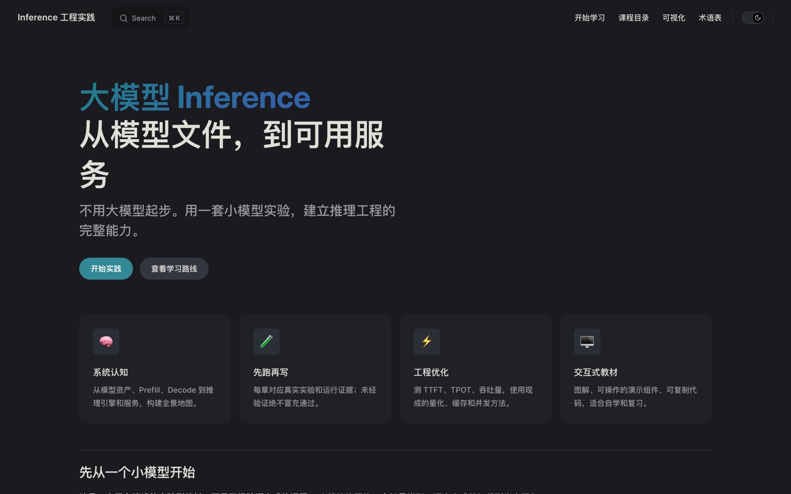

Description
Start with a small model, not a big one, and build the full range of inference engineering through experiments. Each chapter is tied to a real experiment and its run evidence. Covers prefill, decode, TTFT, TPOT, throughput, quantization, caching and concurrency.
Demo
Home page
